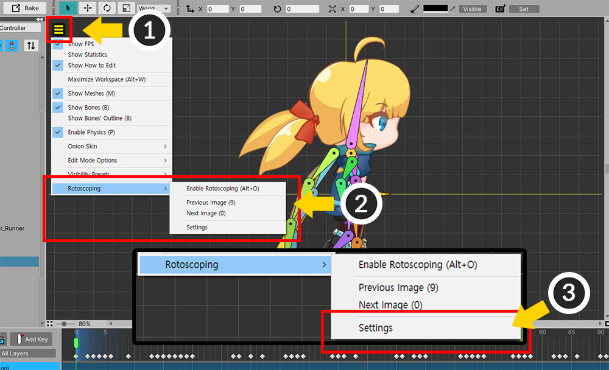
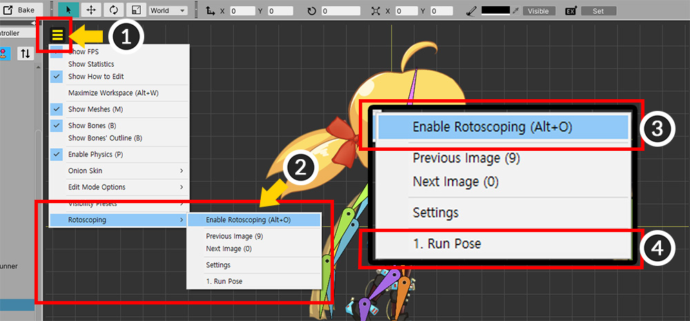
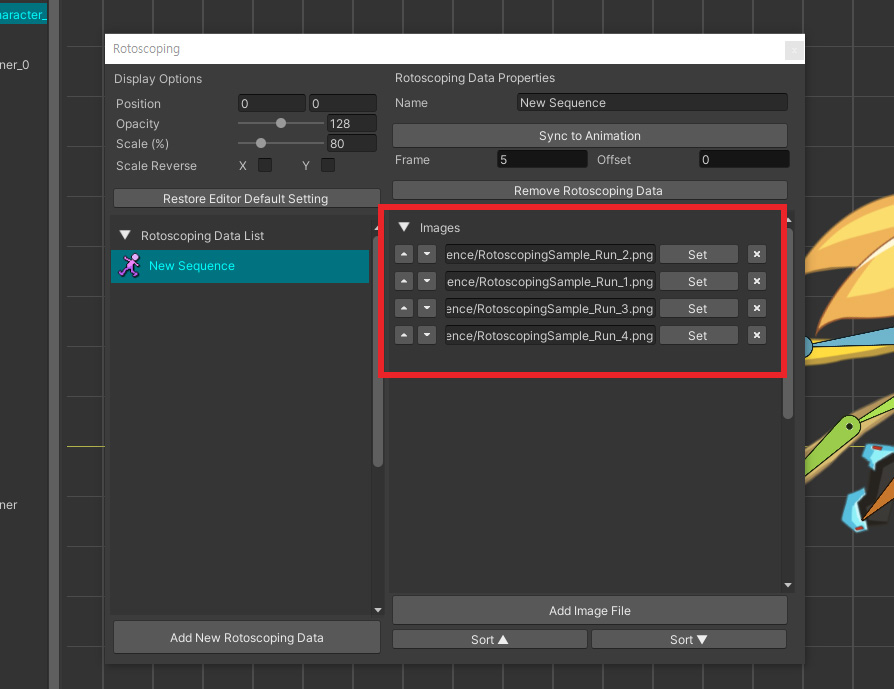
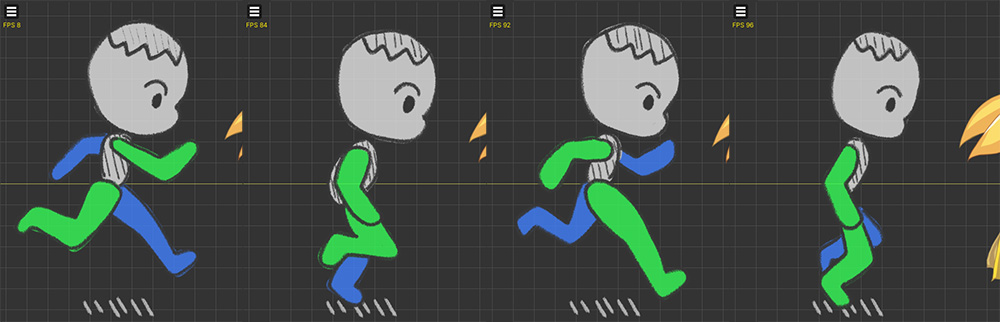
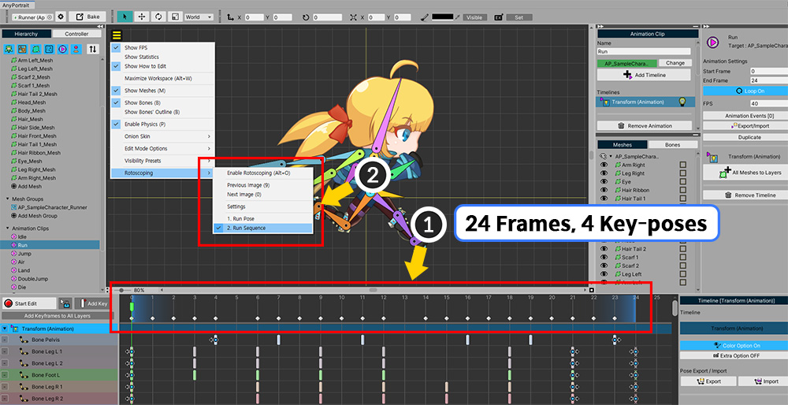
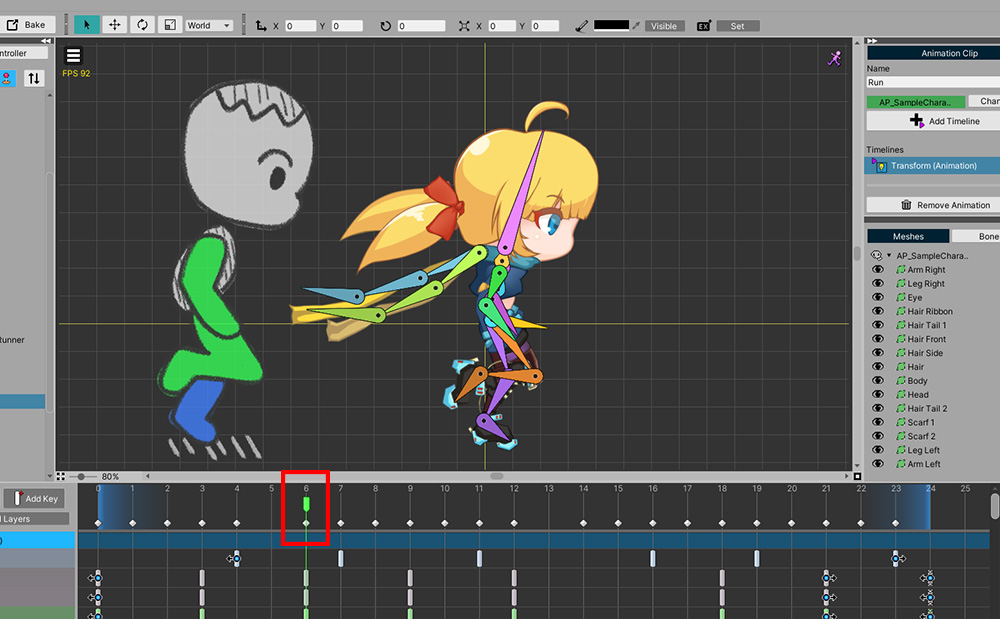

AnyPortrait > マニュアル > ロトスコーピング
ロトスコーピング
1.4.7
「ロトスコーピング（Rotoscoping）」は、写真や映像をフレーム単位で参照してアニメーションを作成する手法を指します。
これを利用すれば、実際のと同じ動きをより効果的に行うことができます。
同様に、あなたが参照してすべき写真や画像を見ながらアニメーションを作成することができる機能があれば良いでしょう。
このページでは、ロトスコーピング手法のアイデアに着眼された機能を紹介します。

走るキャラクターが描かれた4つの画像を用意しました。
ここで簡単に描かれた画像の説明をするが、実際の写真を利用するのも良い方法です。
これで、この画像をワークスペースにロードしてみましょう。

(1) 「表示メニュー」を開きます。
(2) 「Rotoscoping」メニューを選択します。
(3) まだイメージをロードするかどうか設定していないので、「Rotoscoping > Settings」を選択します。

ロトスコーピング設定画面です。
1. Display Options : 外部の画像がワークスペースにどのように表示されるかを設定します。
2. Restore Editor Default Setting : 「Display Options」を初期化します。
3. Rotoscoping Data List : 作成されたロトスコーピングデータが表示されるリストです。
4. Add New Rotoscoping Data : 新しいロトスコーピングデータを作成します。
5. Name : ロトスコーピングのデータの名前を指定することができます。
6. Animation プロパティ : アニメーションのフレームと同期して自動的に画像が切り替わるようにすることができます。
7. Remove Rotoscoping Data : 選択されたロトスコーピングデータを削除します。
8. Images : 選択されたロトスコーピングデータに含まれているイメージです。
9. Add Image File : 外部の画像ファイルを選択したロトスコーピングデータに追加します。

新しいロトスコーピングデータを作成し、イメージをロードしてみましょう。
(1) 「Add New Rotoscoping Data」ボタンを押します。
(2) 新しいロトスコーピングデータが生成されました。ロトスコーピングのデータを選択します。
(3) ロトスコーピングデータの名前を設定します。

(1) 「Add Image File」ボタンを押します。
(2) 準備した画像ファイルのものを選択してロードします。
これで、このロトスコーピングデータを使用すると、イメージファイルをワークスペースに表示することができます。
ロトスコーピング設定画面を閉じます。

(1) 再度「表示メニュー」を開きます。
(2) 「Rotoscoping」メニューを開くと、生成されたロトスコーピングデータが追加されたことを見ることができます。
(3) 「Enable Rotoscoping」（ショートカット Alt+ O ）を押します。
(4) ロトスコーピングデータが選択されていない場合は、「表示メニュー」からロトスコーピングのデータを選択します。

設定した画像がワークスペースに表示されるのを見ることができます。

あなたの作業方法に合わせて、画像の位置や大きさ、不透明度を変更することも可能です。
(1) ロトスコーピングの設定を開いて、「Display Options」の項目を適切に変更します。
(2) 画像の位置、不透明度、サイズが変化するのを見ることができます。
「AnyPortrait v1.4.7」で追加されたオプションを使用すると、X、Y軸に対してサイズを反転できます。
複数の画像ファイルをロード

複数の画像ファイルを開いて参照することも可能です。
新しいロトスコーピングデータを作成複数の画像ファイルをロードしてみましょう。
(1) ロトスコーピングの設定を開いて、「Add New Rotoscoping Data」ボタンを押します。
(2) 新しいロトスコーピングデータが生成されました。
(3) ロトスコーピングデータの名前を設定します。

(1) 「Add Image File」ボタンを押して (2) 画像ファイルをロードします。
この作業を繰り返して、用意された4つの画像ファイルをすべて開きます。
同様の名前のファイルを一度に開く
1.4.7

開こうとする連続した画像ファイルの名前の数字を除く残りの文字が互いに等しい場合は、一度に開くことができます。
フォルダ内に数字以外の同じ名前の4つのファイルがあります。
これらのファイルから1つを選択してください。

フォルダ内に連続した画像として見えるファイルがある場合は、上記のメッセージが表示されます。
「Add All」ボタンを押すと、そのフォルダ内の同様の名前のすべての画像ファイルが一度に追加されます。

フォルダ内の4つの画像ファイルが一度に追加されたことがわかります。
ソートボタンを押すと、画像ファイルを名前順にすばやくソートできます。

(1) 4つのファイルがロトスコーピングデータに追加されました。
イメージファイルのロード情報を修正したい場合は、以下のUIをご利用下さい。
(2) 順を変えたい場合、上下ボタンを押します。
(3) ファイルの名前とパスです。
(4) Setボタンを押して、他のイメージファイルをロードすることができます。
(5) 削除ボタンです。

上記のような方法でロトスコーピングデータを適用してみましょう。
ロトスコーピングの設定をオフにして表示メニューを開きます。
(1) 作成したロトスコーピングデータを選択します。
(2) 「Rotoscoping > Enable Rotoscoping」をクリックします。

(1) 表示メニューから「Previous Image、Next Image」（ショートカット 数字キー9、0 ）を押して画像を切り替えることができます。

ワークスペースからの4つの画像ファイルを一つずつ見てアニメーションを作成することができます。
アニメーションと同期して自動的に画像の切り替え

アニメーションが再生され、自動的に画像が切り替えたら、より効率的な作業が可能になります。
(1) 対象となるアニメーションは、合計「24フレーム」であり、「4つのキーポーズ（Key-Pose）」があります。つまり、「6フレーム」間隔でキーポーズが変わることです。（「6フレーム」を覚えておきましょう。）
(2) このアニメーションと、作成したロトスコーピングデータが同期されるように作られてみましょう。

(1) ロトスコーピングの設定を開いて、先ほど作成したロトスコーピングデータを選択します。
(2) 「Sync to Animation」ボタンを押して同期機能を有効にします。
(3) 「Frame」を「6」に設定します。




ロトスコーピングをオンにして、アニメーションを再生してみると、上記のように、自動的にロトスコーピング画像が切り替わるのを見ることができます。

もしアニメーションの最初のキーポーズのフレームが「0」でない場合は、開始位置を変更する必要があります。
ロトスコーピングの設定を開いて、「Offset」を適切に変更します。

さて、最初ロトスコーピング画像の基準フレームが「Offset」に合わせて変更されたことを見ることができます。